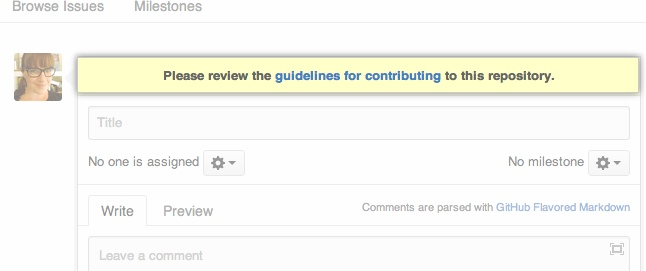

To help your project contributors do good work, you can add a CONTRIBUTING file (or CONTRIBUTING.md file, if you're using Markdown) with contribution guidelines to the root of your project's repository. Then, whenever someone opens a pull request or creates an issue, they will see a link to that file.

For the repository owner, contribution guidelines are a way to quickly communicate how people should contribute.
For contributors, these guidelines help them verify that they're submitting well-formed pull requests and opening useful issues.
For both owners and contributors, contribution guidelines save time and hassle generated by improperly created pull requests or issues that have to be rejected and re-submitted.
Adding a CONTRIBUTING file
- On GitHub, navigate to your project's repository.
- Add a new file, named CONTRIBUTING or CONTRIBUTING.md to the root directory of your repository. Adding the
.mdextension will create a Markdown file. - In the new file, add contribution guidelines. These could include:
- Steps for creating good issues or pull requests.
- Links to external documentation, mailing lists, or a code of conduct.
- Community and behavioral expectations.
- Type a commit message, or accept the default message.
- Under the commit message box, click Confirm merge.
Examples of contribution guidelines
If you're stumped, here are some good examples of contribution guidelines:
- The Atom editor contribution guidelines.
- The Ruby on Rails contribution guidelines.
- The Open Government contribution guidelines.